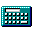

A: C:\WINDOWS\*.*
Preferences

Type the name of the program to run:
Microsoft Windows Version 1.01
Copyright (C) 1985 Microsoft Corporation.
All rights reserved. Designed for IBM PC and compatibles.
Exit Windows
This will end your Windows session and return to the Boot Manager.